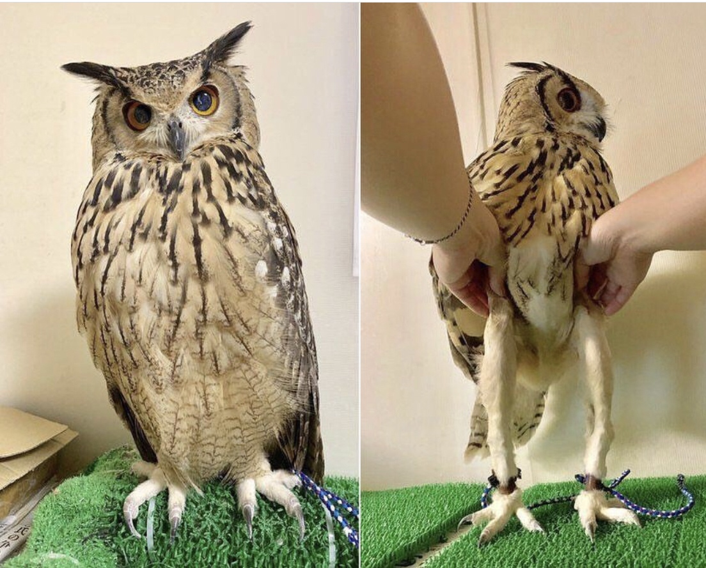

Ugler har generelt store fremadrettede øjne og et fremragende syn. Deres øje er opbygget anderledes end menneskets. Det er mere aflangt end menneskets kugleformede øje. Denne aflange form sætter uglerne i stand til at se deres bytte på lang afstand. Hørelsen er også specielt udviklet, så de kan opfange højfrekvente lyde (fra f.eks. gnavere). Ofte er det ydre øre asymmetrisk udformet, hvilket gør uglerne bedre i stand til at lokalisere, hvorfra lyden kommer. Ugler har ligesom rovfugle lange, spidse, krumme kløer og et kraftigt krumt næb.
Næsten hele kroppen er dækket af fjer, der gør den glat og strømlinet. Fjerene er bløde. Dette gør uglerne næsten lydløse, når de jager deres bytte. Knoglerne er som hos de fleste andre fugle meget lette og ofte tilmed hule, hvilket gør vægten mindre. Samlet set gør det ugler til eminente flyvere. Til forskel fra de fleste rovfugle sluger uglerne byttet helt og gylper klumper af ufordøjet føde op. Disse dannes i fuglens kråse (muskelmave), hvor også byttets knogler findeles. Uglerne har derimod ingen kro (udvidelse af spiserøret) som rovfuglene.